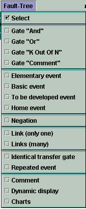
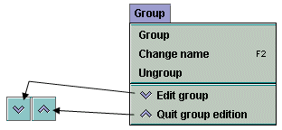
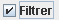

User Manual
Copyright © 2013 Total
Abstract
This document is the user manual of Fault Tree module of GRIF 2013
Table of Contents
The main window is divided into several parts:
Title bar: The title bar shows the names of the module and file being edited.
Menu bar: The menu bar gives access to all the application's functions.
Icon bar (shortcuts): The shortcut bar is an icon bar (horizontal) which gives faster access to the most common functions.
Tool bar: The tool bar (vertical) allows you to select the elements for modeling.
Input zone: A maximum amount of space has been left for the graphical input zone for creating the model.
Tree: A tree is "hiden" between input zone and tool bar. It enables to walk through pages and groups of the document.
Set of tables: Tables are gathered in "hiden" tabs on the right.

The File menu contains the standard commands used in this type of menu (open, close, save, print, etc.). The properties (name, creation date, created by, description, version) can be accessed and modified by selecting Document properties. The Document statistics provide information on the model's complexity. It is also possible to access a certain number (configurable) of recently modified files.
The icon bar just under the menus proposes shortcuts for most of the File commands:

The Edit menu contains all the commands needed to edit the model being input graphically.
The icon bar just under the menus proposes shortcuts for most of the Edit commands:

The Tools menu contains all the commands needed to manage the current model (page management, alignments, options, etc.).
The icon bar just under the menus proposes shortcuts for most of the Tools commands:

The Document menu gives access to all the documents being created or modified.

The Fault Tree menu contains all the commands needed to produce the graphical part of the current model.
The vertical icon bar on the left of the application provides shortcuts for each of the Fault Tree commands (cf. vertical tool bar).
The Data and Computations menu is divided into two parts: data management (creation and management of the different parameters) and configuration/computation launch (computation time, desired computation, etc.)..

NB: The Verify function detects any errors in the model: data without values (equal to NaN), events having the same name, etc.
The Group menu concerns the input and management of submodels grouped into independent subassemblies.
The icon bar just under the menus proposes shortcuts for two of the Group commands:
Finally, the Help menu accesses the on-line Help, the Help topics and to "About".
Each operating safety model has its own icons. All the graphical symbols for the fault trees are shown on the vertical icon bar on the left of the data input screen.
The vertical toolbar contains the following items:
Select selects the desired elements.
"AND" gate to add a logic gate of the type "AND" (represented by a flat-based geometrical figure).
"Or" gate to add a logic gate of the type "OR" (represented by a curved-based geometrical figure).
"K out of N" to add a logic gate of the type "K out of N" (represented by a geometrical figure with a double flat base).
"Comment" gate to insert a block (represented by a rectangle) containing only comments in the model.
Elementary event represented by a diamond shape.
Basic event represented by a circle.
To be developed event represented by two diamond shapes, one inside the other.
Home" event represented by a shape vaguely resembling a house.
Negation represented by a small circle.
Link (one only) to create one connection (and only one) between an input (gate) and an output (gate or event).
Links (many) to create connections between the inputs (gates) and the outputs (gates and events).
Identical transfer gate represented by a triangle.
Repeated event represented by a circle.
Comment to add text directly to the graphic.
Dynamic display to display the value of a model element.
Charts to draw charts representing computations on the model.
To create or modify data (parameters, variables, etc.), tables are available in the Data and Computations menu and in tabs at the right of the view. All the GRIF 2013 data tables operate in the same manner.
The data editing table/panel is divided into 3 parts:
The top part containing the buttons.
The main part containing the data table.
The bottom part indicating what the selected data is used for.
 | Saves the table in a text file. |
 | Opens the table in a text editor (that defined in the Options). |
 | Opens the column manager. |
 | When the button is pressed, a click in the table leads to the selection in the input area. |
 | Displays the data filtering part. |
| Multiple modifications made to all the selected data. | |
 | Creates new data. |
 | Duplicate the selected data (ask a new name) |
 | Deletes the selected data (one or many). |
 | Enables data filtering or not. |
 | Defines the filter to be applied to the data. |
Filtering allows you to display only what is necessary in a table. Several filtering criteria can be combined, as shown below:

Select or to choose the type of association between each line (filter criterion). A line is a Boolean expression divided into 3 parts:
the first is the column on which the filter is used;
the second is the comparator;
the third is the value to which the data will be compared.
If the Boolean expression is true, the data will be kept (displayed); otherwise the data will be masked. When the filter is enabled its value is displayed between < and >.
The data in a column can be sorted by double clicking the header of this column. The first double click will sort the data in ascending order (small triangle pointing upwards). The second double click on the same header will sort the column in descending order (small triangle pointing downwards).
A table can contain many columns, some columns may be unnecessary in certain cases. The "linked to database" column is unnecessary when no database is available. It is thus possible to choose the columns to be displayed and their order. To do this, click right on a table header, or click the button, the following window opens:
You can choose the columns to be displayed by selecting (or deselecting) the corresponding check boxes. The arrows on the right are used to move the columns up or down in the list to choose the order of the columns. The Disable data sorting check box disables the data sorting. This improves the application's performance with very complex models.
To modify data, double click the box to be modified. When several lines are selected (using the CTRL or SHIFT keys) changes can be made to all the selected data by using . A window then opens to allow you to make these changes.
The bottom table in the data table indicates which elements in the model use the selected data. The first column of this table gives the name of these elements; the second indicates their location in the document (page, group). Clicking on a line in this bottom table opens the page where the element is located and selects the element.
As mentioned above, the tables can be accessed via the Data and Computations menu; in this case, each table is displayed in a separate window.
To avoid having too many windows open, all the tables are grouped together in tabs on the right-hand side of the application. This area can be hidden/displayed using the small arrows above the input zone.


You can expand or collapse a node in a recursive way with a right click on the node.
As explained for tables on the right, you can "hide" the tree.